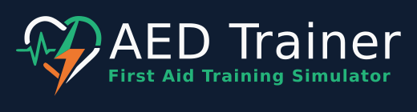
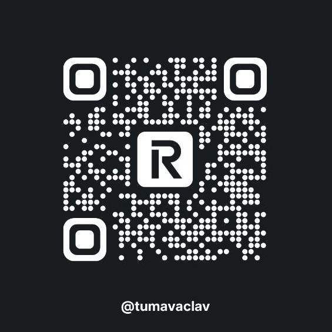

FRx
ZOLL
SAM
Návod
CZ
EN
Zdroje
♥ Podporit
READY
--
Dosp\u011bl\u00fd
D\u00edt\u011b
1
2
1
FRONT
2
BACK
↻
ELEKTRODA 1
Prava klicni kost
ELEKTRODA 2
Levy bok - axila
⏻
ZAP/VYP
i
⚡
VYBOJ
READY
NABIJIM
VYBOJ
🎲
↺
Pr\u016fb\u011bh
Sc\u00e9n\u00e1\u0159
110 BPM
80
140
110
BPM
0
/30
Kolo
1/4
00:00
↓ STLACENI HRUDNIKU ↓
✓ DVA VDECHY PROVEDENY
Pr\u016fb\u011bh z\u00e1sahu
✕
Podporte projekt

revolut.me/tumavaclav
Otevrit Revolut →
revolut.me/tumavaclav
✕
Jak používat trenažér